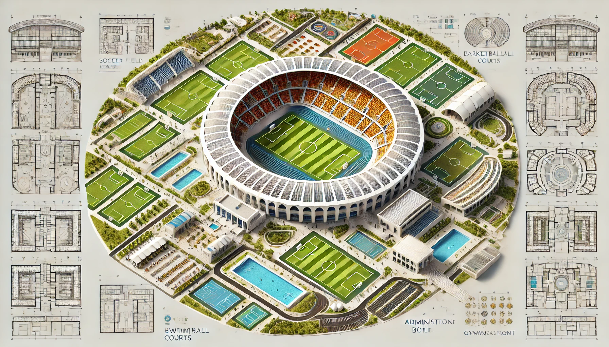

SERVICES
explorez le colisée
Structure Centrale
- Stade Principal : Au cœur du complexe se trouve un grand stade multi-sports avec une piste d'athlétisme et un terrain central destiné principalement au football.
- Gradins : Le stade est entouré de gradins permettant d'accueillir un grand nombre de spectateurs.
Terrains de Sport
- Terrains de Football : Plusieurs terrains de football entourent le stade principal, offrant des espaces supplémentaires pour les entraînements et les matchs.
- Terrains de Basketball : Des terrains de basketball sont disposés autour du complexe, incluant des courts intérieurs et extérieurs.
- Terrains de Tennis : Les courts de tennis sont également disponibles, offrant des surfaces de jeu de haute qualité pour les amateurs de tennis.
Installations Aquatiques
- Piscines : Le complexe comprend plusieurs piscines, adaptées à la natation de compétition ainsi qu'aux loisirs. Il y a aussi des piscines pour l'entraînement et la détente.
Gymnases
- Salles de Sport : Les gymnases sont équipés pour diverses activités sportives et de fitness, incluant des équipements modernes pour l'entraînement musculaire et cardiovasculaire.
Restaurant
- Espace de Restauration : Un restaurant unique est situé dans le complexe, offrant des options diététiques adaptées aux sportifs, parfait pour récupérer après l'effort.
Administration
- Bâtiment Administratif : L'administration du complexe est centralisée dans un bâtiment dédié, où les visiteurs peuvent obtenir des informations, s'inscrire aux activités et régler des questions administratives.
Des chemins bien définis relient chaque section du complexe, assurant une circulation fluide et facilitant l'accès à toutes les installations. Une légende claire est incluse sur la carte, avec des icônes distinctes pour chaque type d'installation, rendant l'orientation facile pour tous les visiteurs.
plan du complexe

Rejoignez-nous
Nous sommes à la recherche de personnes passionnées et motivées pour rejoindre notre équipe. Si vous êtes enthousiaste à l'idée de travailler dans un environnement sportif de premier plan et que vous souhaitez contribuer à l'expérience de nos visiteurs, nous aimerions vous rencontrer !
Pourquoi Rejoindre Notre Équipe ?
- Ambiance Dynamique : Travaillez dans un environnement stimulant et énergique, entouré de passionnés de sport.
- Évolution de Carrière : Profitez d'opportunités de développement professionnel et d'avancement au sein de notre complexe.
- Formation Continue : Bénéficiez de programmes de formation pour améliorer vos compétences et connaissances.
- Accès aux Installations : Profitez de l'accès gratuit à nos installations sportives pour rester en forme et en bonne santé.
Postes Disponibles
Conditions d'Embauche
- Âge Minimum : 18 ans.
- Expérience : Une expérience préalable dans le domaine sportif ou dans le poste visé est un atout.
- Disponibilité : Capacité à travailler les week-ends et les jours fériés selon les besoins du complexe.
- Compétences Interpersonnelles : Capacité à travailler en équipe, à communiquer efficacement et à offrir un excellent service à la clientèle.
- Passion pour le Sport : Un intérêt marqué pour le sport et un mode de vie actif.
Comment Postuler ?
Envoyez votre CV et une lettre de motivation à warriorcolosseum@gmail.com ou déposez votre candidature directement à notre bureau administratif au Complexe Sportif "Colisée". Nous avons hâte de vous rencontrer et de vous accueillir dans notre équipe !
Messages de l'équipe
"Tout le monde est bienvenue, vous allez adorer travailler ici." - Wassim Menga
"Vous ne trouverez pas un meilleur service ailleurs!" - Ken Kaneki